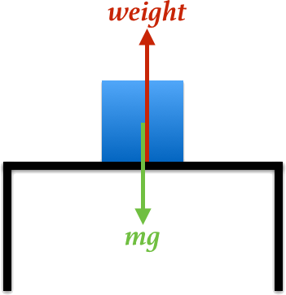
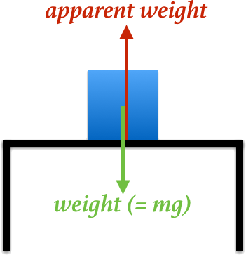

By Don Koks, 2014.
In everyday language, weight is something that causes a tension in our muscles as they are called on to support our body. It can also be the sensation that we feel when our body is sagging. By this, we don't really mean the tension we get when we are tired. We mean the tension that is due, in some sense, to our body's mass. Physics starts with this "non-physics" everyday meaning of weight and then sharpens it up mathematically and physically to become well defined and quantifiable.
But at that point physicists split into two camps, which (for a reason that will be obvious shortly) I'll call the "Contact Camp" and the "mg Camp". The Contact Camp (which includes me) retains the everyday meaning of weight and quantifies it so as always to agree with the qualitative non-physics idea of what weight is. The mg Camp defines weight in a way that only matches the non-physics idea of weight in one special situation. I'll describe each of these definitions in turn.
Any time we "feel" our weight, we are invariably in contact with another surface. That surface might be the ground or a chair or a reclining astronaut's seat, and we might be sitting on the beach or accelerating in a rocket. That inspires the Contact Camp's definition of weight, which is "An object's weight is the contact force exerted on it by whatever is supporting it, in any situation." Your weight as defined this way is what is measured by an ordinary set of weighing scales placed between you and whatever is pushing on you (usually the ground). When standing on Earth, your weight won't quite equal the pull of gravity on you unless you are standing at either the North or South Pole.

In the picture at left, Earth pulls on the mass m with a force mg, and the table supports the mass with the contact force labelled "weight". Applying Newton's "F = ma" here gives
mg − weight = m × acceleration.We are applying Newton's law in the almost completely inertial frame of the Solar System, and if the mass is not at one of Earth's poles, it will certainly be accelerating slightly as Earth turns. So its weight doesn't quite equal mg.
This idea of weight recognises that what makes us "sag" is the fact that something is pushing on our body. We don't sag if nothing is pushing on us; the sagging occurs because, for example, the ground pushes on our feet, and that push is communicated up through our body, which stresses our joints and muscles to the extent that we must exert some muscle force to keep our posture: we feel heavy. This contact force depends on your state of motion. When you are falling freely—not a common experience for us humans—you're not in contact with anything, and so you have no perception of weight; you feel no sag. If you try to stand on a set of scales that is falling with you, you won't be able to press against them, and so they'll read zero—which is precisely what you expect when you're weightless.
At the other extreme, if you're an astronaut lying in a rocket with a high acceleration, both the contact force on you and the effort you must make to support your body (e.g., to keep breathing properly) increases tremendously, and this would again be shown by a set of scales placed between you and your seat. The Contact Camp will say that the astronauts you see floating in the Space Shuttle or tethered outside the Hubble telescope are weightless, and the astronauts working hard to keep thinking straight during a rocket launch have had their weight increased tremendously. This weight of an object is always correctly measured by a set of scales placed between the object and the supporting surface. We could of course place the scales in various places, but if we place them so as to read the maximum value possible, then that maximum value will be the object's weight.
Some physicists define the weight of an object to be the force of gravity on it irrespective of anything else: their definition is "The weight of an object equals its mass times the local acceleration due to gravity." This idea of weight is independent of the object's state of motion and doesn't consider any contact force. It is not quite equal to the feeling of heaviness that you have right now as you sit in a chair reading this, unless you're sitting at either the North or the South Pole. Physicists who use this definition of weight will refer to the contact force as "apparent weight". They'll say that when you are falling freely you weigh as much as you do when you're sitting in a chair, although they'll add that your apparent weight is zero in free fall. They'll say that the astronauts floating in the Space Shuttle or tethered outside the Hubble telescope have almost the same weight as they do on Earth (slightly less as g is slightly lower 400 km above Earth's surface), but that their apparent weight is zero. And they'll say that the astronauts working hard to keep thinking straight during a rocket launch have the exact same weight as they do at home in their kitchen, but that their apparent weight has increased.

In the picture at left, Earth pulls on the mass m with a force of "weight" (which always equals mg), and the table supports the mass with the contact force labelled "apparent weight". Applying Newton's "F = ma" here gives
weight (i.e. mg) − apparent weight = m × acceleration.As before, the acceleration is measured in an inertial frame. As Earth turns, this acceleration is not zero if the object is not at the Poles, and so its weight does not quite equal its apparent weight.
The mg Camp's definition of weight only matches the non-physics idea of weight in the case when the mass is sitting in a gravity field but is not accelerated in an inertial frame. An example of this is a mass sitting at one of Earth's Poles.
Physics sometimes redefines commonly used words in a way that differs to their everyday usage. One obvious example is "work": when you hold an object in your hand, you do no (physics) work on it, and yet your arm is clearly getting tired. Your muscular system is certainly doing work, but this work is done internally and is not done on the object. So physics has a notion of doing work on something, because that idea turns out to be useful in mechanics. Definitions don't pretend to be more than they are; there is no point in asking "Which definition of weight is correct, or more correct?". Instead, we can only ask "Which definition is more useful?".
Given the option of retaining the everyday use of "weight" or redefining it, what's the best course? I think that if there's no useful reason to redefine a word then we shouldn't, especially when that word has been in the public domain since time immemorial. That's why I'm in the Contact Camp, because I find no useful reason to discard the commonly understood meaning of "weight". As it is, physicists find it hard enough communicating their ideas to non-physicists through a sometimes-esoteric language; so must we also redefine commonly used words that don't need redefining, just for the sake of it?
Here is an example of how the mg Camp's definition of weight can confuse even that camp, let alone everyone else. Consider Weidner and Sells' excellent trio of undergraduate physics textbooks. In their Volume 1 (second edition), they define weight in a way that puts them squarely in the mg Camp. In Section 8-5, they discuss the fact that the only force acting on an astronaut orbiting Earth in a spaceship is gravitational: mg, which they have previously defined to be his weight. But since we all know that astronauts float around inside their capsule, the authors add that "the astronaut experiences apparent weightlessness". Now they have painted themselves into a corner, and feel obliged to write "Paradoxically, the only time a body experiences apparent weightlessness is when the only force acting on it is its weight!". Clearly, the mg Camp's definition of weight has caused it to declare a paradox in this simple situation. In contrast, the Contact Camp has no problem with the astronaut. He is weightless, pure and simple.
Another point worth pondering is how these two definitions of weight might dovetail with Einstein's theory of gravity. Einstein's theory draws a quantitative comparison between the measurements of an observer inside an accelerating rocket far from gravity with those of a non-accelerating observer in a gravitational field. The Contact Camp will say that both observers feel weight, and so this camp has no problems making the comparison required by Einstein. In contrast, the mg Camp will say that the rocket observer has no weight (because there is no gravity in the rocket: g is zero), and that the observer in the gravity field does have weight (because g is non zero there.) To insist that the experience of the rocket observer is "apparent" while that of the observer in the gravity field is real goes against the principle of relativity. Yes, the mg Camp will say that both observers have an apparent weight; but because they differentiate between apparent weight and mg, they have taken the focus away from what Einstein is really addressing: gravity, g.
Here are two thought experiments to help you distinguish between the two definitions of weight—and to decide for yourself which camp you'd like to be in. (But remember, as Sheldon Cooper would say, there's only one right answer.)
Imagine that a phenomenon occurs that makes Earth spin gradually faster and faster. Eventually it is spinning so quickly that anyone fixed to the Equator is moving at the speed of an object in circular orbit near Earth's surface, about 8 km/s. If you are placed at rest on the ground of this Equator, the gravity force on you will provide exactly the centripetal force that keeps you moving in a circle in the inertial Solar System frame, and so the ground will not push up on you. You will float! A little distance away from the Equator, you will find yourself just settled on the ground, only marginally registering a non-zero reading on a set of weighing scales. Now move farther still from the Equator (you'll have to push on something, or fire a little rocket to get moving) where the ground is moving at somewhat less than 8 km/s in the inertial frame, and you will float less and less with increasing distance. No one will deny that at the Equator you feel a complete lack of bodily sag, along with an amazing ability to float about. So will you describe your perception of (a lack of) weight at the Equator as real (the Contact Camp) or apparent (the mg Camp)? What is so "apparently weightless" about floating like a levitating saint? And what is so "apparently increasing in weight" about finding yourself sag more and more the farther from the Equator that you move?
For the second thought experiment, put yourself in the seat of a Saturn V rocket ready to lift off for the Moon. Or rather, you had better lay yourself in that reclining seat, because when those five huge nozzles at the base light up and the whole set pumps out an astounding 200 million horse power for the next two minutes, you'll be pushed back into that seat so hard that I'm sure you'll be thinking there's nothing apparent about your sudden increase in weight!